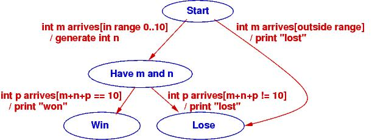
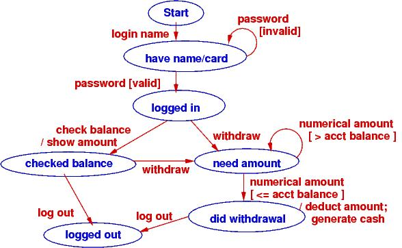
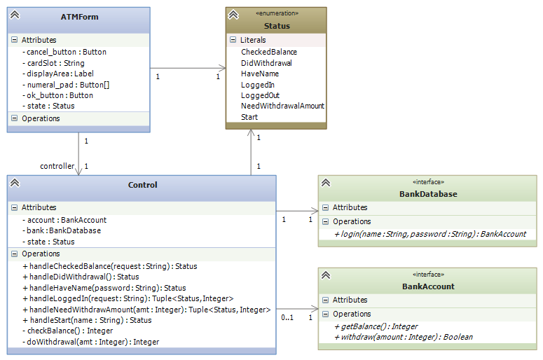
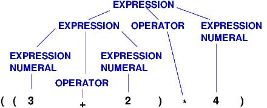
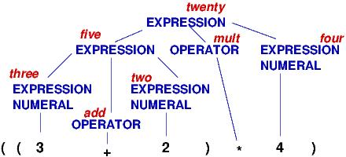

Course Notes — CIS 501: Software Architecture and Design, Fall 2014
A controller holds an algorithm or protocol. A controller’s methods hold steps of the algorithm/protocol. In a reactive system, the steps (methods) of the algorithm are executed one at a time, in response to input events.
When you have an algorithm that gets divided into stages, due to input events, then use a state diagram to document the stages and define the methods that the controller will need.
At the beginning of the course, we did a little exercise like this:
Use Visual Studio to code a console app and then to code a Forms app for the following game:
"Guess an int, M, in range 0..10: M = "
(User types int, m)
"I, the computer, guess this int, N, in range 0..10-M: N = (Computer randomly gens n)
"Now you type an int, P, such that M + N + P = 10: P = "
(User types int, p)
"You win!" or "You lose!" (depending on how the ints total)
We have this use-case realization (algorithm):
“Guess an int, M, in range 0..10:” (User types int, m):
Input int m is checked to see if it is in range, 0..10.
If yes, int n is randomly generated for display:
“Computer guesses this int, N = n. Now you guess P such that M + N + P = 10:” (User types int, p):
Input int p is added to m and n to see if the sum is 10.
The result is displayed:
“You win!” or “You lose!” (depending on how the ints total)
If we implement the game as a console application, the Console is the “View” that receives input and displays output, and the console app’s Main method is the controller that implements the realization:
static void Main() {
// Step 1:
Console.Write("Guess an int, M, in range 0..10: ");
int m = int.Parse(Console.ReadLine());
if (m >= 0 && m <= 10) {
int n = (new Random()).Next(0, 10 - m);
// Step 2:
Console.Write("Computer guesses this int, N = {0}.\nNow you guess P such that M + N + P = 10: ", n);
int p = int.Parse(Console.ReadLine());
// Step 3:
if (m + n + p == 10) { Console.WriteLine("You win!"); }
else { Console.WriteLine("You lose!"); }
}
else { Console.WriteLine("You lose!"); }
Console.ReadLine(); // retain command window till user presses Enter
}
The algorithm is a simple “straight-line” sequence — beginner stuff.
If the game is implemented as a Forms app (reactive system), there is a View (Form), a Controller, and more work, because the game is split into two stages:
The straight-line code must be chopped into pieces. )-:
There is a special diagram that we draw to list the stages a controller must traverse when computing the algorithm in a reactive system — a state diagram. For complex controllers, a state diagram is a critical part of the design that you do before you code the controller.
We reformat the use-case realizations as this state diagram:
The states are the blue ellipses. The labels on the arcs have form, event [condition] / action. The event is the external, input event that triggers computation. The condition must be true for the arc to move to the next state in the computation (this is a way of remembering where if commands are needed), and the action describes the computation to do if the condition is true.
The state diagram shows how the game moves from its start state on an input event (“int m arrives”) to a state where two ints are known. At this point, a second input event transitions to an end state.
The Controller implements the state diagram via a handler method that is called when a button is pressed. Here is how we might code it, using the states of the state diagram as data values:
// states of the number-guessing game
public enum Status { Start, HaveMN, Win, Lose };
// controller for number-guessing game
public class GameController {
private int m; // user's initial guess
private int n = -1; // the randomly generated response
private Status state = Status.Start; // how far the algorithm has progressed
// handle executes the next step of the game based on the current state
// param: s is a string representing an int
// returns: a tuple holding (the new state of the game, an int to be displayed)
public Tuple handle(string s) {
switch (state) { // check current state to decide what to do:
case Status.Start: { // start of game: s is a user-supplied int
bool intOK = int.TryParse(s, out m);
if (intOK && m >= 0 && m <= 10) {
n = (new Random()).Next(0, 10 - m); // generate random int
state = Status.HaveMN;
}
else { state = Status.Lose; }
break;
}
case Status.HaveMN: { // middle of game: s is user's second int guess
int p;
bool intOK = int.TryParse(s, out p);
if (intOK && (m + n + p == 10)) { state = Status.Win; }
else { state = Status.Lose; }
break;
}
default: { // game is over and state is Status.Win or Status.Lose
break;
}
}
return new Tuple(state, n);
}
}
The Status of the game (Start, HaveMN, Win, Lose) is defined by a C# enumeration; the values came from the state diagram. Variable state is called a state variable because it remembers the “state of the game.” The state variable helps the controller enforce the game’s protocol (steps of its algorithm) in the correct order.
Notice that handle returns a pair (Tuple) that holds the new state of the game and an int to be displayed. The View object (Form) uses this information to select the correct message to display. That is, the View also uses enumeration Status to track the progress of the game. By the way, here is how a pair is disassembled in C#:
GameController c = new GameController(...);
// ...
Tuple pair = c.handle(mytextbox.Text);
Status state = pair.Item1;
int data = pair.Item2;
// ...
Now, match the code in method handle to the code in method main. The former is easier to read, but the latter is what we are forced to write when we build a reactive system. State diagrams help us do the latter.
As an exercise, you should write a class GameForm, a Form with a Textbox and a single Button, that calls GameController‘s handle method and uses the information that is returned to refresh the display and tell the human player what to do next.
It is also possible to code the state diagram as multiple methods, one for each state in the diagram. Here’s what the controller would look like:
public class GameController {
private int m; // user's initial guess
private int n = -1; // the randomly generated response
private Status state = Status.Start; // how far the algorithm has progressed
// handleStart checks initial guess and generates a random response int.
// precondition: game is in Start state
// param: s is a string representing an int
// returns: a tuple holding (the state of the game, a random int)
public Tuple handleStart(string s) {
bool intOK = int.TryParse(s, out m);
if (intOK && state == Status.Start && m >= 0 && m <= 10) {
n = (new Random()).Next(0, 10 - m); // generate random int
state = Status.HaveMN;
}
else { state = Status.Lose; }
return new Tuple(state, n);
}
// handleMN checks final guess and computes outcome.
// precondition: game is at HaveMN state
// param: s is a string representing an int
// returns: state of the game (is either Lose or Win)
public Status handleMN(string s) {
int p;
bool intOK = int.TryParse(s, out p);
if (intOK && state == Status.HaveMN && (m + n + p == 10)) {
state = Status.Win;
}
else { state = Status.Lose; }
return state;
}
// handleWin does nothing --- the game is over
// precondition: game is at Win state
// returns: state of the game
public Status handleWin() {
if (state != Status.Win ) { state = Status.Lose; }
return state;
}
// handleLose does nothing --- the game is over
// precondition: game is at Lose state
// returns: state of the game
public Status handleLose() {
state = Status.Lose;
return state;
}
}
The above coding might be used when the View form has multiple buttons that can call distinct handlers. The View form would use its own state variable to remember the status of the game and to enable the appropriate button(s).
To summarize,
When you login to a web form or an ATM, you do it in stages: you provide a login name (it’s on the magnetic strip or chip of your bank card), which is verified, you provide a password (PIN), which is verified, then you are shown a menu of options, of which you select one, and that leads you to more options that you follow to complete a transaction. Like the number game above, there are stages that must be completed for the transation. Use-case realizations help you list all the operations. From the realizations, you generate one big state diagram that lists the protocol/algorithm for the ATM’s controller:
It is almost a mechanical process to define the controller’s fields, methods, and even the methods’ codings from the state diagram. Here is what we might design if we write multiple handler methods from the diagram:
You type instructions in C# to tell a computer what to do. C# is a language that instructs the computer. When you use a reactive tool to tell the computer what to do, your key presses and mouse clicks define a “baby language” that instructs the computer.
The event-protocol for a system defines a programming language, an “input language.”
A state diagram lists the events that cause the controller to move from one computational state to the next. The paths through the state diagram list event sequences. Each event sequence along a path defines an input program.
When you take a course on language theory, you will learn that a state diagram defines a finite-state automaton and the paths define a regular language.
Reconsider the two examples seen above. Here are the langauges they define:
Number game: The input language consists of just these two event sequences, these two “programs”:
m arrives p arrives
m arrives
The specific values of ints m and p generate differing outputs, but there are just two legal sequences that one uses with the game. So, we build a GUI with a button and textbox so that the human can “write” these “programs”, which are sent to the controller that implements the state diagram.
Bank ATM: There are many (indeed, infinitely many) distinct input programs for the ATM. Here are three examples:
login name password check balance logout
login name password password withdraw amount logout
login name password check balance withdraw amount amount logout
The second and third examples show that a password and then a withdrawal amount were reentered due to errors.
We can write a regular expresion (an “and-then”/or”/”repeat”) expression to define precisely the ATM’s input language:
login name
password+
( check balance ( logout | (withdraw amount+ logout ))
| withdraw amount+ logout )
The | means “or” and the + means “repeat one or more times”. You read it like this: “An input program starts with login name followed by one or more password s followed by either check balance followed by ... or withdraw followed by one or more amount s then logout.”
State diagrams define regular languages, which are formalized by regular expressions.
State diagrams cannot define all languages. Languages like English and C# have nested, internal structure. (Think about how assignments are nested in loops, which are nested in methods, which are nested in....)
In particular, languages that used nested, matching brackets cannot be defined by a state diagram. A simple and good example is arithmetic, where the user submits/writes a nested expression, bracketed with parentheses, e.g., ( ( 3 + 2 ) * 4 ).
Treat the symbols, (, (, 3, +, etc., as “events” that trigger computation. A state diagram, by itself, cannot define the algorithm for reading and computing the arithmetic expression.
“Nested languages” are called context-free languages, and their computations are defined by attributed grammar rules. Here is the attributed grammar that defines how to compute an arithmetic program to its output, its meaning:
Syntax (format of "event sequences"):
-------------------------------------
EXPRESSION ::= NUMERAL | ( EXPRESSION1 OPERATOR EXPRESSION2 )
OPERATOR ::= + | - | *
NUMERAL ::= 0 | 1 | 2 | ... | 9
Semantic attributes ("actions" triggered by events):
--------------------------------------------
meaningOfNUMERAL[ 0 ] = zero
meaningOfNUMERAL[ 1 ] = one
meaningOfNUMERAL[ 2 ] = two
...
meaningOfNUMERAL[ 9 ] = nine
meaningOfOPERATOR[ + ] = add, where add(m,n){ return m+n }
meaningOfOPERATOR[ - ] = sub, where sub(m,n){ return m-n }
meaningOfOPERATOR[ * ] = mult, where mult(m,n){ return m*n }
meaningOfEXPRESSION[ NUMERAL ] = meaningOfNUMERAL[ NUMERAL ]
meaningOfEXPRESSION[ ( EXPRESSION1 OPERATOR EXPRESSION2 ) ] = meaningOfOPERATOR[ OPERATOR ]( meaningOfEXPRESSION[ EXPRESSION1 ], meaningOfEXPRESSION[ EXPRESSION2 ])
An example:
The “event sequence” defined by ( ( 3 + 2 ) * 4 ) is this nested, tree structure:
and the actions/meaning generated by the tree is this:
Both the “event sequences” and the actions are nested in recurrence-equation style. (The event sequences are trees, called parse trees.) There are automated tools, called parser generators, that convert definitions like the one above into code. The C# compiler converts your C# program into a parse tree and then computes the tree’s meaning — an .exe-file that computes your program’s output.
We will not study context-free languages here; you will see them if you take CIS505. There are also context-sensitive languages and unrestricted (Turing machine) languages.
This note was adapted from David Schmidt's CIS 501, Spring 2014, Lecture 8 course note. © Copyright 2014, David Schmidt.